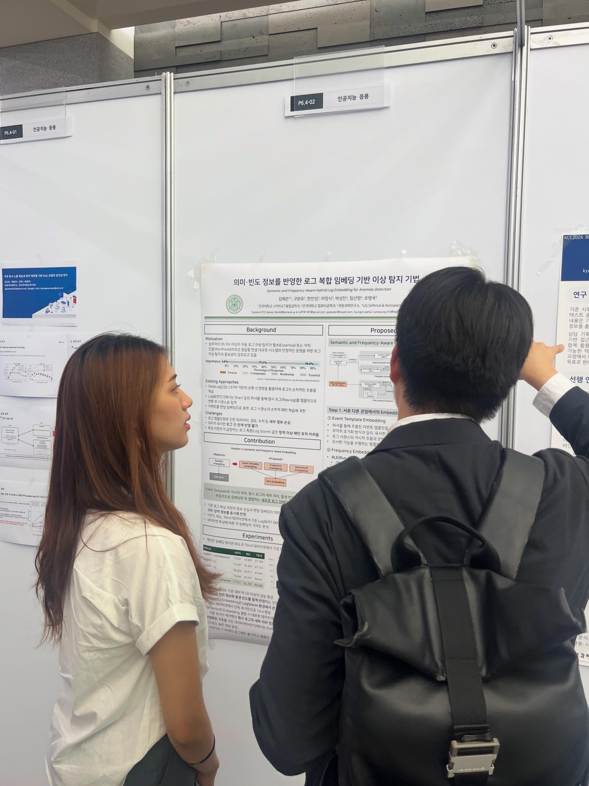

로그 메시지의 세부 의미와 발생 빈도를 함께 반영하는 새로운 임베딩 방식을 제안하여, LogBERT 기반 이상 탐지 성능을 향상시킨 연구입니다. 국방과학연구소·LIG넥스원과의 협업으로 수행되었습니다.
대규모 분산 시스템에서 발생하는 로그 데이터를 분석해 결함을 감지하는 로그 기반 이상 탐지는 시스템 안정성 확보를 위한 핵심 기술입니다. LogBERT와 같은 Transformer 기반 모델들은 로그 시퀀스의 양방향 문맥을 학습해 정교한 이상 징후 포착 능력을 보여주었지만, 로그가 지닌 다양한 정보 요소를 충분히 반영하지 못한다는 한계가 있었습니다.
구체적으로, 기존 방법은 Drain과 같은 파서를 통해 원시 로그를 이벤트 템플릿으로 변환한 뒤 시퀀스로 입력합니다. 이 과정에서 로그 메시지 내부의 파라미터·경로·수치 등 세부 정보가 손실되고, 이벤트는 무작위 임베딩으로 표현되어 의미적으로 유사한 로그 간의 관계를 반영하지 못합니다. 또한 이벤트 순서 패턴에만 의존하기 때문에, 특정 이벤트가 단시간 내 비정상적으로 급증하는 로그 폭풍(Log Storm)과 같은 양적 이상 패턴을 포착하기 어렵다는 문제가 있었습니다.
파서로 추출한 이벤트 템플릿만 활용해 세부 파라미터 정보 손실, 무작위 초기화 임베딩으로 의미적 관계 미반영, 로그 발생 빈도 같은 양적 변화 포착 어려움
원시 로그의 세부 의미·이벤트 템플릿의 거시적 의미·발생 빈도의 양적 변화를 각각 임베딩한 뒤 결합하여 LogBERT에 입력, 의미·빈도 정보를 모두 반영한 이상 탐지 가능
원시 로그 텍스트 전체를 Sentence-BERT로 인코딩한 뒤 계층적 잔차 양자화(Residual Quantization)를 적용해 이산화된 Semantic ID를 생성합니다. 파서가 제거했던 세부 파라미터·상태 변화 정보를 벡터 공간에 보존하는 Fine-grained Semantics 관점입니다.
파서로 추출한 이벤트 템플릿을 Sentence-BERT로 임베딩해 무작위 초기화 대신 의미적 상관관계를 수치화합니다. 로그 시퀀스의 거시적 흐름과 문맥적 의미를 파악하는 Coarse-grained Semantics 관점입니다.
RLE(Run-Length Encoding)로 동일 이벤트의 연속 발생 횟수를 추출하고 MLP로 학습 가능한 벡터로 변환합니다. 로그 폭풍처럼 단시간 내 급증하는 양적 이상 패턴을 반영하는 Frequency Dynamics 관점입니다.
세 임베딩은 동일한 차원으로 구성되어 원소별 덧셈(Element-wise Addition)으로 결합되며, 차원 팽창 없이 서로 다른 관점의 정보를 하나의 벡터에 중첩시켜 LogBERT에 입력합니다.
세 가지 임베딩을 모두 결합한 제안 방법은 BGL·TBird 데이터셋에서 가장 우수한 성능을 보였습니다. 특히 BGL 데이터셋은 기존 랜덤 임베딩 baseline 대비 약 20 이상의 F1-score 향상을 기록했는데, 이는 로그의 의미 정보와 양적 변화를 동시에 고려하는 전략이 정밀한 이상 탐지를 효과적으로 유도했음을 보여줍니다. 로그 폭풍이 빈번한 BGL 환경에서는 Frequency Embedding의 기여도가 두드러졌고, 원시 로그의 세부 의미를 보존하는 Semantic ID Embedding은 대부분의 데이터셋에서 최종 성능을 한 단계 끌어올렸습니다.
반면 템플릿 종류가 20개에 불과할 만큼 구조가 매우 정형화된 HDFS 데이터셋에서는 Event Template Embedding만으로도 충분한 성능(79.223)을 보여, 데이터셋의 로그 다양성에 따라 각 임베딩의 기여도가 달라진다는 점도 함께 확인했습니다.
